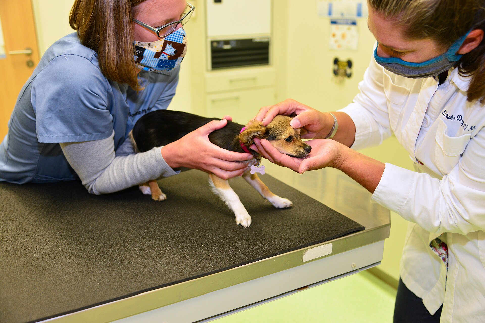
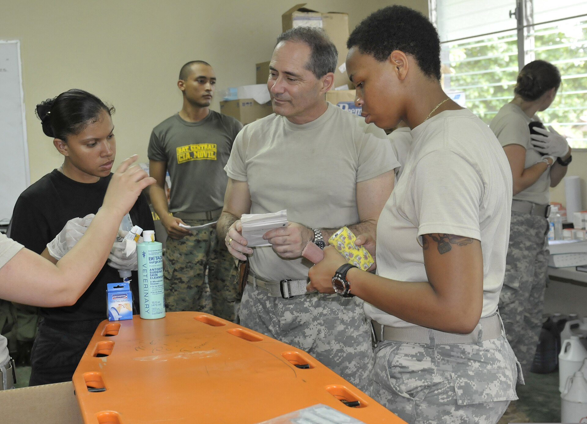

Digital röntgen
Vi röntgar skelett, bröstkorg och buk. Bilderna är klara på under två minuter och du har dem på e-post samma dag.
Vi öppnade 2011 med två undersökningsrum på Klinikvägen 12. I dag är vi nio medarbetare, har egen röntgen och tar emot ungefär 4 200 besök om året. Det mesta löser vi under samma besök i stället för att skicka vidare.
Var vi kommer ifrån
Kliniken startades av två legitimerade veterinärer som tröttnat på att skicka hem djur med beskedet "avvakta". Vi ville kunna röntga, ta blodprov och operera på samma plats. 2016 byggde vi ut med en operationssal och 2019 köpte vi in den digitala röntgenutrustningen.
I dag tar vi emot hund och katt från hela Stockholms län. Större delen av kunderna kommer från Södermalm, Hammarby Sjöstad och Årsta, men vi har också besökare som kör in från Nacka och Huddinge eftersom jourlinjen är bemannad dygnet runt.
Vi är en allmänklinik, inte ett djursjukhus. Det betyder att vi gör det mesta själva men remitterar vidare när fallet kräver specialister och dygnsvård.

Arbetssätt
De är inte marknadsföring. De är skrivna för att vi själva ska kunna svara på varför ett besök ser ut som det gör.
Du får en skriftlig journalanteckning efter besöket, skickad till din e-post samma dag. Recept och remisser ligger i samma dokument, så du slipper ringa och be om papper.
Vaccinationsintyg och intyg för resa får du direkt på plats. Pass för hund och katt tar längre tid och bokas separat.
Historia
Sex nedslag i husets historia. Varje årtal står för något som fortfarande märks i vardagen på Klinikvägen 12.
Det första året tog kliniken emot 640 besök på 78 kvadratmeter. Röntgen fick skickas vidare till ett djursjukhus i stan och svaret kom dagen efter.
En centrifug och ett mikroskop fick plats i det minsta rummet. Samma år anställdes den första djursjukskötaren, och ett blodprov kunde besvaras inom en timme.
Väggen mot gården flyttades för att ge plats åt en steril sal. Efter det sker kastrering och tandvård i huset. Även mindre ingrepp görs klart här i stället för hos en annan klinik.
Filmen och framkallningsvätskan försvann till förmån för en digital platta. Bilderna är klara på under två minuter, och de kan skickas till en remissinstans samma dag.
Katterna fick egen ingång och egen bänk. Ventilationen drogs separat så att luften inte blandas med hundarnas. Andelen kattbesök som avbröts halverades.
Jouren utökades till att omfatta alla nätter. Under året tog kliniken emot 4 200 besök, och operationssalen användes i snitt tolv gånger i månaden.
Kliniken i siffror
Siffrorna är räknade på helåret 2025 och avser klinikens egen verksamhet.
besök per år, varav knappt hälften är återbesök eller årskontroller.
medarbetare: fem veterinärer, tre djursjukskötare och en klinikchef.
dagar i veckan har mottagningen öppet. Jourlinjen svarar alla dagar, hela dygnet.
är medianväntetiden från att du ringer till att veterinären undersöker djuret vid ett akutärende.
Källa: klinikens verksamhetsstatistik 2025, sammanställd av klinikchefen. Siffrorna uppdateras en gång per år.
Utrustning
Egen utrustning betyder kortare väntan och färre transporter för djuret. Allt nedan finns på Klinikvägen 12.
Vi röntgar skelett, bröstkorg och buk. Bilderna är klara på under två minuter och du har dem på e-post samma dag.
Buk- och hjärtundersökning. Används vid misstänkt tumör, vätska i buken eller när röntgen inte ger svar.
Blodstatus, lever- och njurvärden samt urinprov analyseras på plats. Svar inom 20 minuter vid akut.
Separat steril sal med övervakning av andning och hjärtfrekvens. Används för kastrering, tandvård och mindre ingrepp.
Eget rum med egen luftväxling för djur med smitta, så att väntrummet inte behöver stängas.
Ultraljudsscaler och tandröntgen. Vi drar inte ut en tand utan att ha sett rötterna först.

Gränser
Vi tar inte emot djur som behöver andningsstöd över natten, avancerad ortopedi eller magnetkamera. Till det krävs utrustning och bemanning som en allmänklinik inte kan hålla.
När ett sådant fall kommer in stabiliserar vi djuret, lägger smärtlindring och ringer djursjukhuset medan du är kvar. Du får remissen i handen och en kontaktperson där, inte bara ett telefonnummer.
Samma sak gäller exotiska djur. Kaniner, marsvin och fåglar tar vi emot för enklare kontroller, men remitterar vidare vid kirurgi.
Försäkring och betalning
Vi är inte knutna till något försäkringsbolag. Du väljer själv var djuret är försäkrat, och vi tar fram det underlag bolaget behöver. Alla belopp står i prislistan.
Journalanteckning och fakturaspecifikation går till din e-post samma kväll som besöket. Röntgenbilder och labbsvar läggs i samma utskick när de är klara.
Vid direktreglering gör bolaget upp sin del med oss. Du betalar självrisken i kassan, resten skickar vi. Underlaget går i väg inom en arbetsdag, och du får kopia på allt.
Årskontroll och vaccination täcks sällan av grundskyddet. Tandvård kräver oftast ett tillägg i försäkringen, så läs villkoren innan besöket.
Kort och Swish dras i receptionen när besöket är slut. Faktura skickas hem och förfaller efter 30 dagar. Kontanter tar vi inte emot.
Frågor och svar
Fyra frågor vi ofta får i telefon. De handlar om huset och om tiden efter ett besök.
Kliniken ägs av de två veterinärer som öppnade den 2011. Båda arbetar kvar i huset och delar jourveckorna med resten av teamet.
Det finns ingen extern investerare bakom verksamheten. Klinikchefen sköter schema och ekonomi, men varje veterinär ansvarar själv för de djur den har behandlat.
Ja. Du kan stå vid bordet under hela undersökningen och ställa frågor medan veterinären arbetar.
Vid röntgen får du vänta utanför i några minuter eftersom personalen behöver stå bakom skydd. Vid en operation lämnar du djuret och vi ringer när det börjar vakna, oftast inom en timme.
Journalanteckningar sparas i minst tio år. Röntgenbilderna ligger kvar längre än så, eftersom de ofta behövs vid ett nytt fall flera år senare.
Begär du ut en kopia skickar vi den per e-post inom två arbetsdagar. Det kostar ingenting och du behöver inte komma till kliniken.
Beslutet tas tillsammans med en veterinär i ett eget rum, aldrig i väntrummet. Du får vara kvar hela tiden om du vill, och du kan sitta med djuret efteråt så länge du behöver.
Kliniken har avtal med ett krematorium. Du väljer om urnan ska skickas till dig eller om djuret ska kremeras utan återlämning, och kostnaden skrivs ner innan något görs.
Boka tid gör du snabbast i bokningsformuläret. Tider och telefonnummer finns på kontaktsidan.
Bildkällor
Fotona på sajten är fria bilder från Wikimedia Commons. Fotograf och licens står nedan. Detta är en demosajt — bilderna byts mot klinikens egna foton vid lansering.


.jpg){kind=link}


,_California.jpg){kind=link}


.jpg){kind=link}

.jpg){kind=link}


.jpg){kind=link}


.jpg){kind=link}